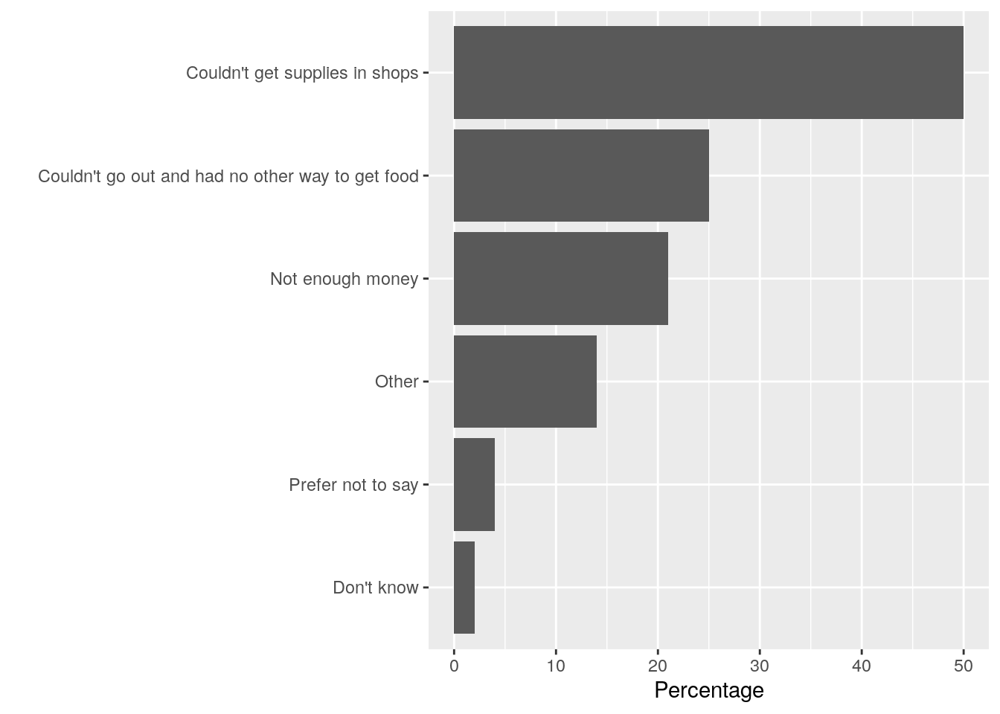
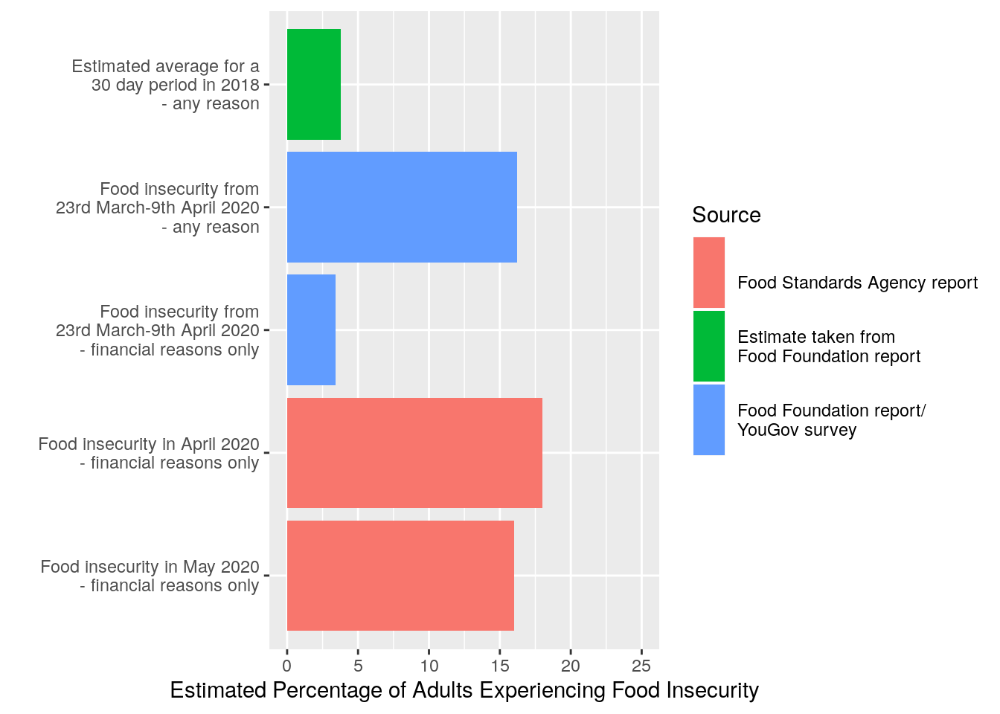
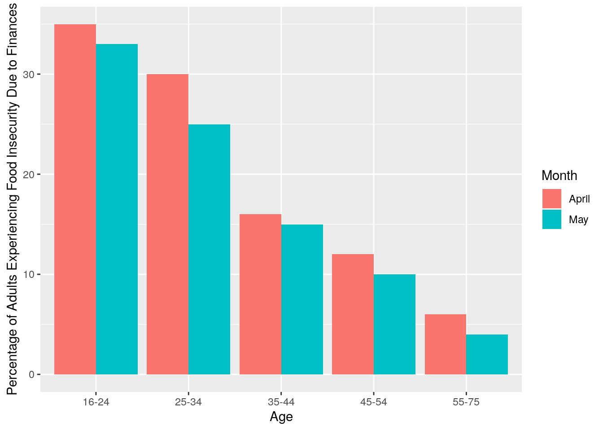
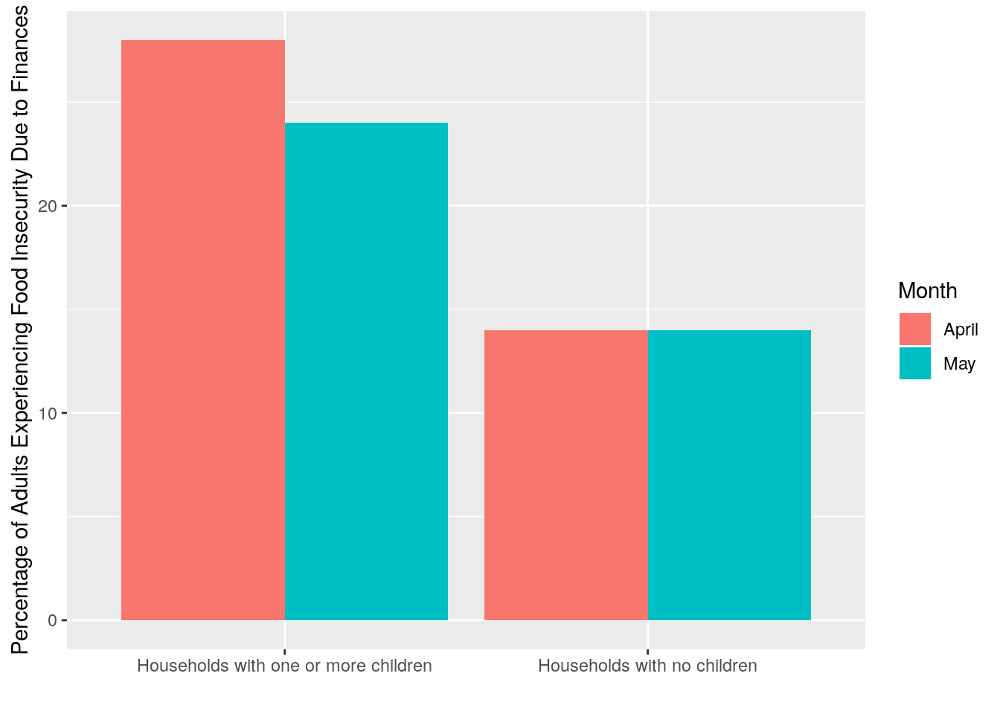

It was the first week of lockdown. My partner and I found a trolley and walked into the supermarket superstore. I had anticipated there would not be as much food as normal. I hadn’t anticipated that there might not be any food at all. We walked the length of the fruit and vegetable aisle, staring into empty crates. There was nothing. At the end of the aisle, we found a few small expensive plastic pots of microwaveable vegetables. “It’s going to be OK,” I said.
The first few weeks of lockdown were my first and only experience of going to a supermarket and worrying that I might not be able to buy food. I wasn’t alone. Although me and my partner found walking around the empty supermarket worrying, we were luckily able to afford the few random, expensive items we found. Unfortunately for many, the sudden decrease in food availability in supermarkets coincided with a fall in income. This is likely to explain the disturbing increase in the percentage of adults who reduced meal sizes or skipped meals for financial reasons in March-May 2020.
Since the start of lockdown, a series of reports have been released on food insecurity since lockdown began in the UK. Lockdown officially began on 23rd March. Two weeks after this date, the Food Foundation commissioned a YouGov survey of over 4000 adults aged 18 and over. In the Yougov survey, 16.2% of adults reported food insecurity, which the accompanying report defined as having one or more of the following experiences due to being unable to afford or access food:
Based on previous data, the Food Foundation report estimated that we would typically expect about 3.8% of adults in the UK to experience food insecurity in a given 30 day period. If this estimate is accurate, this means that food insecurity rose by more than four times at the start of lockdown. The barplot below gives a breakdown of the reasons given for experiencing food insecurity in the first 2 weeks of lockdown.

It is possibly not surprising that food insecurity was high at the start of lockdown, given pretty much everybody had an experience of being unable to find staple foods in supermarkets (eggs, anyone?). However, the supermarket supply chain gradually recovered over the course of April and May. Did food insecurity fall to its normal level? To answer this question, we can look at a report released by the Food Standards Agency investigating food insecurity in April and May 2020. The report was released a week and a half ago with very little media attention, possibly because the agency’s social media and press alert did not mention food insecurity or food bank usage prominently. This was an interesting decision for a government agency releasing a report primarily discussing food insecurity.
In the report, a representative sample of just over 2000 adults aged 16-75 were surveyed about their eating habit. Alarmingly, 18% of respondents reported that they had reduced meal sizes or skipped meals in April 2020 for financial reasons. In other words, nearly 1 in 5 people reduced the amount they ate in April due to financial concerns. This fell, but not significantly, in May, when 16% of respondents reported eating less for financial reasons.

Socioeconomic factors played a big role in the likelihood of skipping or reducing the size of meals. Interestingly, the likelihood of skipping or reducing the size of meals differed greatly by age, with 33% of 16-24 year olds skipping or cutting down meal sizes in May compared with 4% of 55-75 year olds. This should give some pause for thought. For all of the joking about avocado toast, the fact remains that an estimated 1 in 3 British adults aged 16-25 went without food due to a lack of money in April and May this year.

Perhaps even more concerningly, households with children were significantly more likely to report cutting meal sizes or skipping meals, with about 1 in 4 households reporting this. As the survey only asked adults about their eating habits, we can not tell from this data to what extent parents who were reducing meal sizes or going hungry were able to protect their children from doing the same. In other words, we can’t tell from this data how many children went hungry in April and May because their parents could not afford to buy them food.

Based on these reports, we can estimate that just under 1 in 5 adults cut meal sizes or missed meals in April this year for financial reasons. This rises to 1 in 4 adults who have children, and 1 in 3 adults aged 16-25. It doesn’t have to be this way. As 1 in 5 adults went hungry, the richest 20% of households were expected to save £23 billion over the course of a 3 month lockdown. £23 billion is a huge sum of money. To put it into context, £23 billion is 48% of what the government would normally get from all basic, higher and additional rate taxpayers over a 3 month period. The cost of feeding people now could be covered by a progressive taxation on wealth in the future. Depressingly, I do not think the scale of food insecurity during lockdown has been fully recognised by the media or the public. Consequently there has not been enough political action to stop people from going hungry on a massive scale.